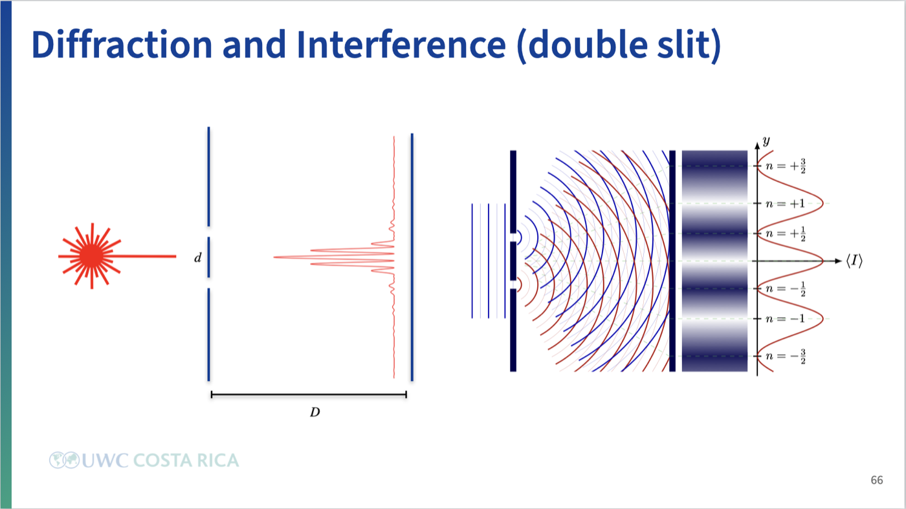
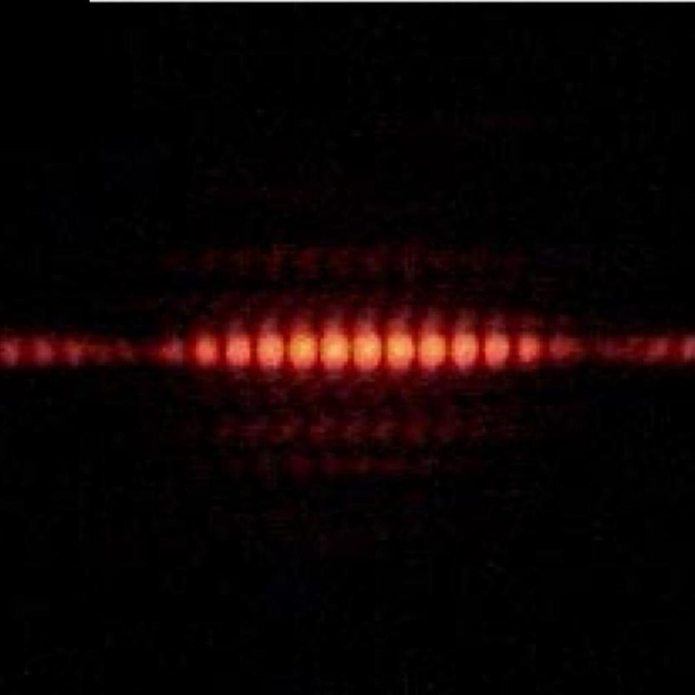
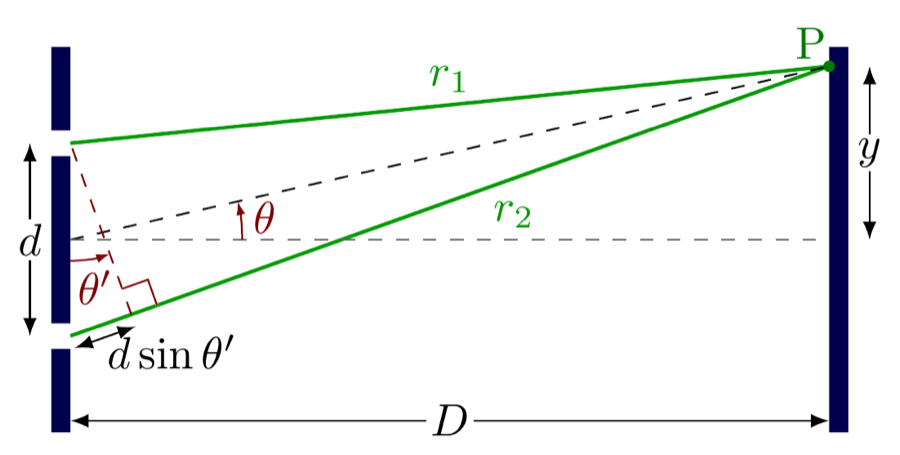
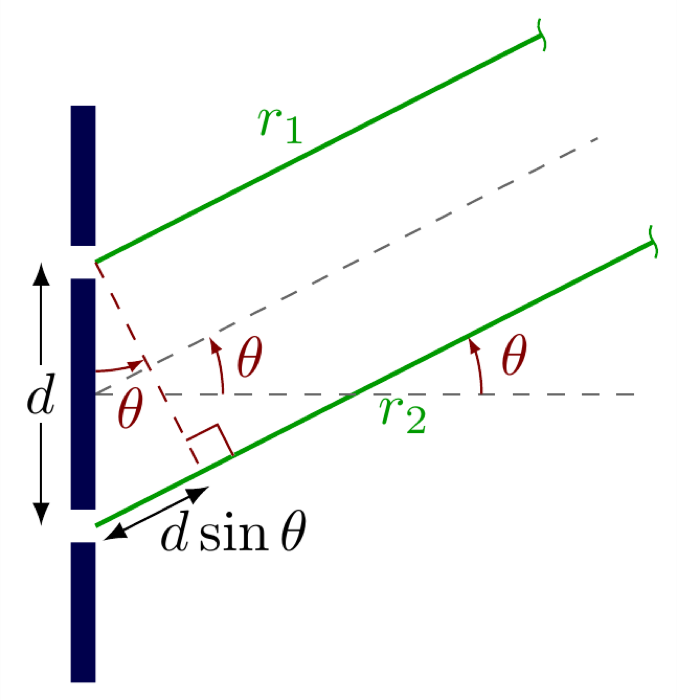
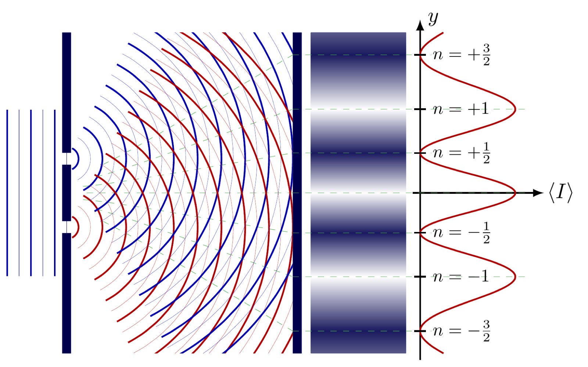
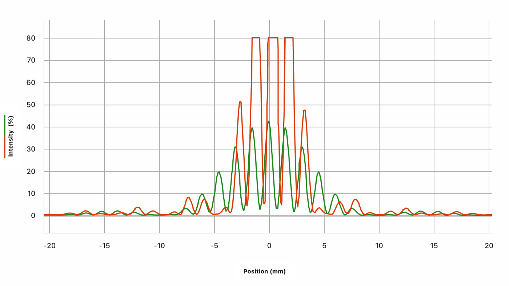
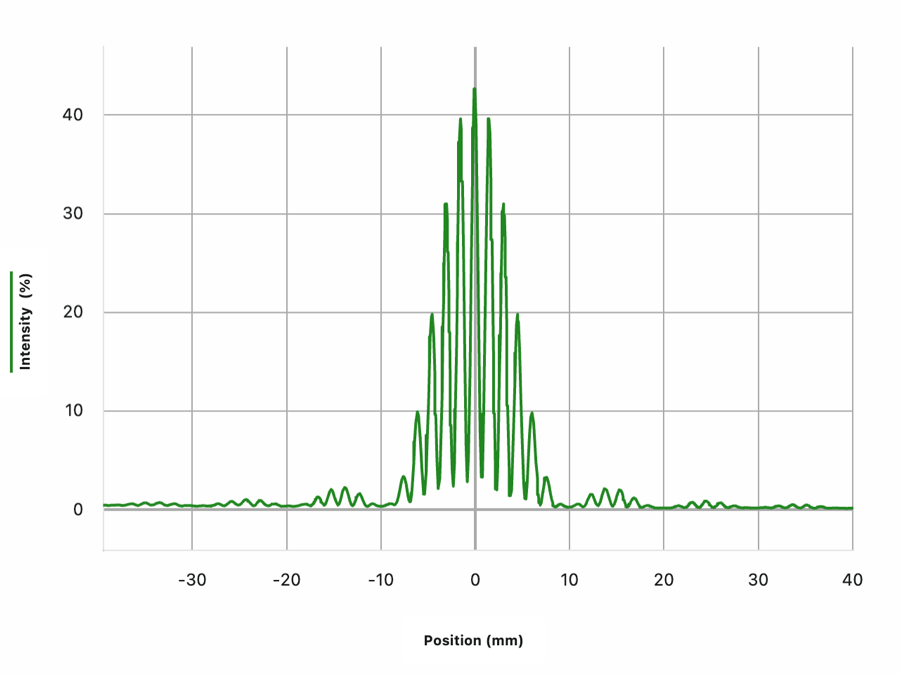
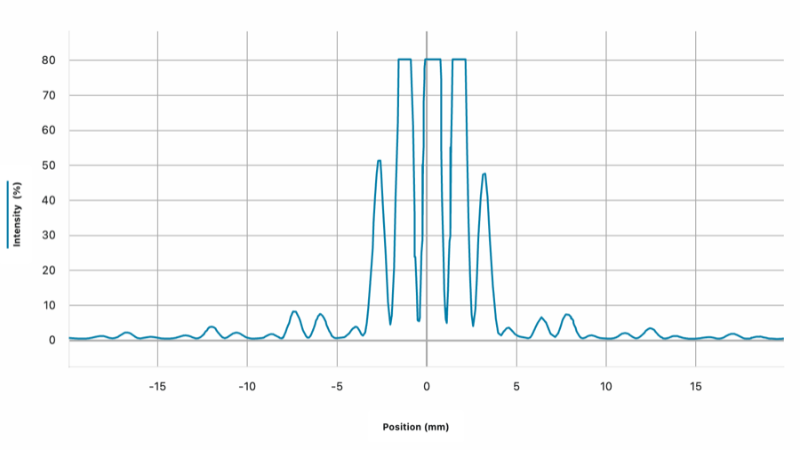

Two slits instead of one, a fine comb of fringes where Lesson 9 and 10 only ever showed a single hump, and two knobs, slit width and slit separation, that turn out to control two completely different features of it.
Same Vernier diffraction apparatus, same Graphical Analysis Pro sharing live data to every device, no projector, but the aperture is a double slit now instead of a single one. This time there are two things to change instead of one: the width of each slit, \(b\), and the separation between the two slits, \(d\). The class works through several combinations of the two, changing one at a time, to see what each one actually controls.

Nothing about Lesson 9 or 10 prepares you for what this actually looks like. Instead of one bright hump fading into a couple of dim side bands, the pattern is a fine, tightly packed comb of bright and dark lines, and that whole comb only shows up clearly inside a broader bright region that itself fades out and comes back, the same shape the single slit already produced on its own.

Nothing new has to be invented to explain this, it's the previous two lessons happening simultaneously and on top of each other.
Each slit still has a finite width \(b\). By itself, either slit would produce exactly the single-slit diffraction pattern from Lesson 9 and 10, a broad bright hump fading into faint secondary humps, set by \(b\). Both slits are lit by the same wavefront at the same time, so both are doing this identically and simultaneously.
But the two slits are also two separate, coherent sources of their own wavelets, separated by a distance \(d\). Light reaching a point on the wall from the top slit and light reaching that same point from the bottom slit have travelled two different path lengths, \(r_1\) and \(r_2\), and those two wavelets interfere with each other exactly the way Lesson 5's ripple tank barrier or Lesson 7's boundary already established: line them up crest to crest and they add brightly, line them up crest to trough and they cancel.

Sending the screen far enough away collapses \(r_1\) and \(r_2\) into two parallel rays leaving at the same angle \(\theta\), the same far-field simplification used for the single slit, and the path difference between the two slits becomes a single clean expression, \(d\sin\theta\).

Wherever that path difference happens to come out to a whole number of wavelengths, the two waves arrive crest to crest and the point is bright. Wherever it lands on a half wavelength instead, they arrive crest to trough and the point is dark. Because \(d\) is so much bigger than \(b\) in every version of this apparatus, \(\theta\) sweeps through many of these bright-dark cycles while the single-slit envelope from either slit alone is still nearly at its peak, which is exactly why the fine comb of fringes shows up clearly instead of just one wide bright patch.

The class held the slit width fixed at \(b=0.04\) mm and compared two separations, \(d=0.25\) mm and \(d=0.50\) mm, on the same screen at the same distance.

Both curves rise and fall inside the same broad envelope, edge to edge, because \(b\) never changed. What's different is entirely inside that envelope: the wider separation, \(d=0.50\) mm, packs roughly twice as many fringes into the same space as \(d=0.25\) mm does, each one noticeably narrower. Doubling \(d\) roughly halved the fringe spacing.
Holding \(d\) fixed at 0.25 mm and comparing the two slit widths instead shows the opposite pairing: it's the envelope that moves.


Doubling \(b\) from 0.04 mm to 0.08 mm shrank the envelope down to less than half its previous width, roughly ±9 mm down to roughly ±4 mm, exactly the same \(b \propto 1/\theta\) relationship measured directly in Lesson 10, now showing up as the outer shape of a completely different-looking pattern. The fringe spacing inside, set by \(d\) and unchanged between these two graphs, stayed roughly the same.
This lesson does not go further than that. It hasn't asked what happens to the pattern when the screen itself moves, only what happens to it when the slits change. That question, what the screen distance \(D\) does to this same picture, and the equation that finally ties \(y\), \(D\), \(d\), and \(\lambda\) together, is deliberately left for the next class.
Shrink \(d\) toward zero, and the two slits move toward being one and the same. The angle needed to build up any path difference at all keeps growing, so the fine fringes spread wider and wider apart, until in the limit they vanish entirely, no separation left to interfere with itself, leaving only the plain single-slit envelope. That's Lesson 9 and 10, recovered as the \(d \to 0\) edge of this lesson.
Grow \(d\) instead, far larger than anything used today, and the opposite happens: the fine fringes pack in tighter and tighter, so closely spaced that a real detector eventually can't tell one from the next, and the fast bright-dark comb blurs into what looks like a smooth curve tracing out the envelope alone.
And shrink \(b\), independent of \(d\) entirely, toward the idealised zero-width slit no real apparatus can build, and the envelope itself spreads out to effective infinity, flat across any realistic viewing range. What's left is the fringe comb with nothing fading it out, the textbook double-slit picture, sitting at the far edge of a limit no real slit ever quite reaches.
Two slits didn't need a new kind of physics, they needed the single-slit diffraction from Lesson 9 and the two-source interference already built into Lesson 5 and 7's wavefront reasoning, running at the same time. Changing \(b\) and \(d\) independently, and reading directly off the wall which feature of the pattern moved, is what actually separated those two effects instead of just asserting they were different. The equation that would tie all of this to a screen distance and a fringe position is still one class away.